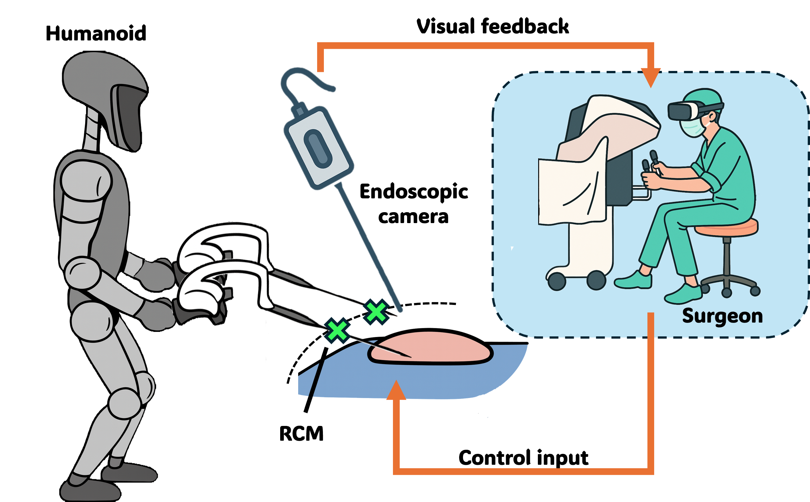
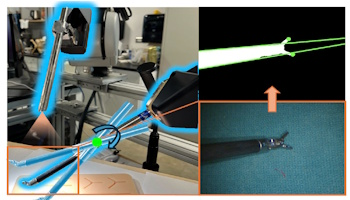
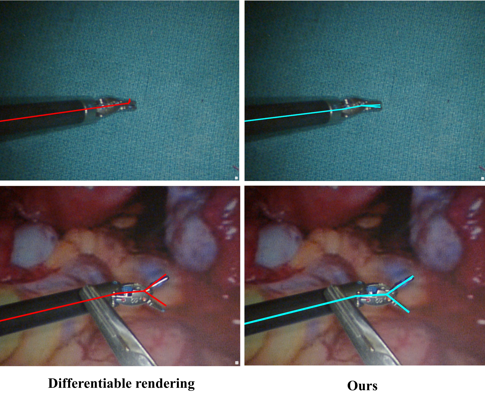
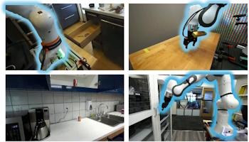

|
Lucas (Zekai) Liang I'm a PhD student at University of California, San Diego, advised by Prof. Michael Yip. Prior to that, I received a M.S in Electrical and Computer Engineering degree at UCSD and a B.S in Mechanical Design, Manufacturing and Automation at Huazhong University of Science and Technology (HUST). |

|
ResearchMy research interests lie in robotics and computer vision, with a focus on Robot state estimation, 3D Reconstruction, and Humanoid Laparoscopy. In my free time, I enjoy gym, films, cooking, and traveling. |

|
BASED: Bundle-Adjusting Surgical Endoscopic Dynamic Video Reconstruction using Neural Radiance Fields
Shreya Saha, Zekai Liang, Shan Lin, Jingpei Lu, Michael Yip, Sainan Liu IEEE/CVF Winter Conference on Applications of Computer Vision (WACV), 2025 paper link |
|  |
LapSurgie: Humanoid Robots Performing Surgery via Teleoperated Handheld Laparoscopy
Zekai Liang, Xiao Liang, Soofiyan Atar, Sreyan Das, Zoe Chiu, Peihan Zhang, Florian Richter, Shanglei Liu, Michael C Yip arXiv, 2025 paper link |
|  |
Differentiable rendering-based pose estimation for surgical robotic instruments
Zekai Liang, Zih-Yun Chiu, Florian Richter, Michael C Yip IEEE/RSJ International Conference on Intelligent Robots and Systems (IROS), 2025 paper link |
|  |
Efficient Surgical Robotic Instrument Pose Reconstruction in Real World Conditions Using Unified Feature Detection
Zekai Liang, Kazuya Miyata, Xiao Liang, Florian Richter, Michael C Yip arXiv, 2025 paper link |
|  |
CtRNet-X: Camera-to-Robot Pose Estimation in Real-world Conditions Using a Single Camera
Jingpei Lu*, Zekai Liang*, Tristin Xie, Florian Richter, Shan Lin, Sainan Liu, Michael C Yip IEEE International Conference on Robotics and Automation (ICRA), 2025 paper link |